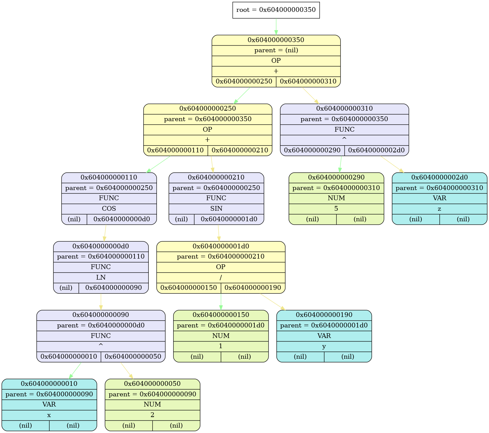

int tree_read_expression(const char *) at ./source/diff.cpp(16):
Tree 0x1062014c0 (OK) "tree" at expr_t *expr_ctor(const char *) at ./source/expr_toks.cpp(27):
{root = 0x106500bd0}

Tree 0x1062014c0 "tree" at expr_t *expr_ctor(const char *) at ./source/expr_toks.cpp(27): DESTRUCTED